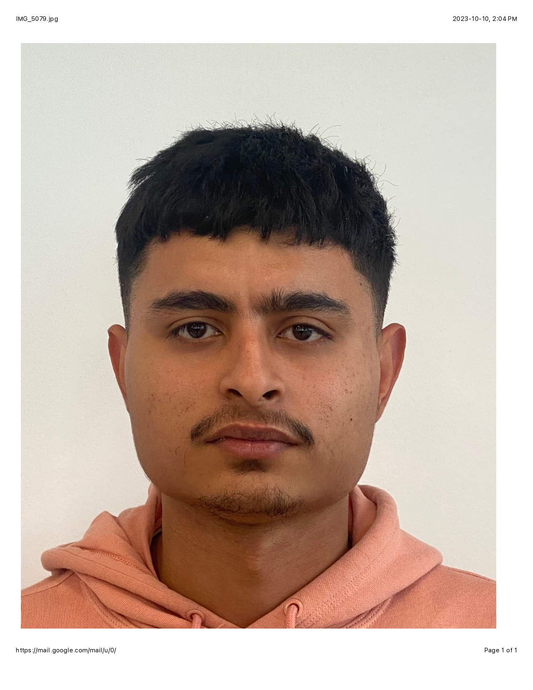
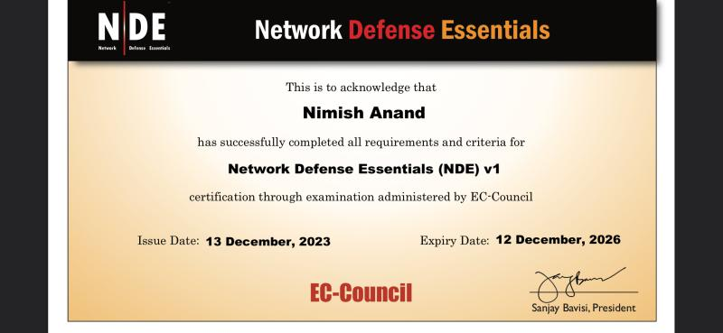

|  |
Nimish AnandCybersecurity Student: Incident Response || Vulnerability Management || |
Allocation, maintenance and troubleshooting of IT equipment used in Amazon Operations facilities.
Handles support requests and procedures across the network.
Install, maintain, or repair security systems, alarm devices, or related equipment.
Mount and fasten control panels, door and window contacts, sensors, or video cameras and attach electrical and telephone wiring to connect components.
Repair/replace, Troubleshoot , test electronic devices such as Debit/Credit and point of sale (POS) machines.
Upgrade software of debit/credit machines.
Provide training about how to use Pinpads to new clients.
Greeted Visitors and residents of residential buidlings; providing access when necessary.
Patrolled all areas of premises and looked into any suspicious activity.
Wrote reports against theft, property damage and any altercations.
Network Defense Essentials - EC Council
Issued Dec 2023 · Expires Dec 2026
Credential ID ECC2083465179
|  |
Introduction to Cybersecurity - Cisco
Issued April 2023
Credentials : Credly by Pearson
Cybersecurity Fundamentals - IBM
Issued April 2023
Credentials : Credly by Pearson
Email: Nimishanand74@gmail.com
Phone: 4168794045
LinkedIn: linkedin.com/in/nimishanand74